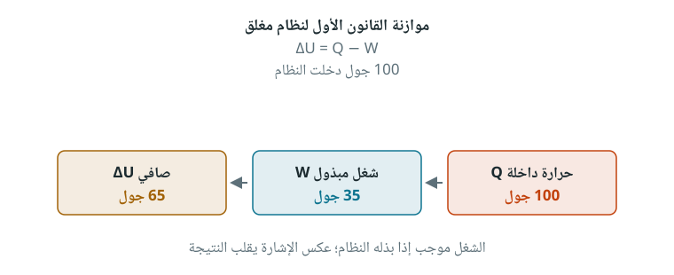

القانون الأول للديناميكا الحرارية
First Law of Thermodynamics
الطاقة لا تُخلق ولا تُفنى: تغيّر الطاقة الداخلية يساوي الحرارة الداخلة ناقص الشغل الذي يبذله النظام، وهو محاسبة طاقة صارمة لا تفسير لاتجاه العملية.
القانون الأول موازنة طاقة لنظام محدد الحدود: ΔU = Q − W. الحرارة Q موجبة إذا دخلت النظام، والشغل W موجب إذا بذله النظام على محيطه. الطاقة الداخلية U دالة حالة تعتمد على الحرارة والضغط والحجم، بينما Q وW ليستا كذلك: قيمتهما تتوقف على المسار الذي سلكه النظام بين الحالتين.
نتيجة مباشرة: في دورة كاملة يعود النظام إلى حالته الأولى فيكون ΔU = 0، ويصبح Q = W. هذا لا يعني أن الحرارة شغل، بل أن مقداريهما اتفقا في الدورة. الحدّ العملي للقانون أنه يمنع المحرك الدائم من النوع الأول — آلة تنتج شغلًا بلا طاقة داخلة — ولا يمنع آلة تحوّل حرارة خزّان واحد كلها إلى شغل؛ منع تلك يحتاج القانون الثاني.
كيف تعمل الظاهرة؟
إضافة حرارة إلى نظام تزيد طاقة حركية الجزيئات وطاقاتها الكامنة الداخلية، فترتفع U. بذل شغل بالتمدد يخفض U لأن الجزيئات تدفع جدارًا متحركًا وتفقد سرعة في اتجاه واحد، ثم تعيد التصادمات توزيعها.
الشغل يعتمد على المسار لأن كل خطوة تمدد تُبذل عند ضغط مختلف: المسار الذي يمر بحالات ضغط أعلى يبذل شغلًا أكبر بين الحالتين نفسيهما، والفرق يظهر حرارةً متبادلة مع المحيط. لذلك تُحدَّد U بمعرفة الحالة وحدها، وتُحدَّد Q وW بمعرفة المسار كاملًا. في الأنظمة المفتوحة تُضاف حدود تدفق الكتلة والإنثالبي والطاقة الحركية، فتصبح الموازنة على حجم تحكّم لا على كتلة مغلقة.
العلاقة بالأرقام
الأرقام تفصل بين الأشكال: تسخين كيلوغرام ماء 10 كلفن يحتاج 41.86 كيلوجول، أي 4,186 جول لكل كلفن. الشغل الميكانيكي للمقارنة صغير جدًّا: رفع الكتلة نفسها مترًا واحدًا يخزّن 9.81 جول، أي 0.023% من الطاقة الحرارية.
هذا التفاوت يفسّر لماذا تُقاس الطاقة الحرارية بالكيلوجول: كيلوواط-ساعة واحد يساوي 3,600 كيلوجول، وخطأ الخلط بين الواط والكيلوجول ينتج فروقًا بمعامل 3,600. وفي النظام المغلق بضغط ثابت تُستبدل U بالإنثالبي H، لأن شغل الإزاحة PΔV يخرج من الحساب ويبقى Q = ΔH.
مفاهيم متقاربة
القانون الأول ليس مجرد عبارة «الطاقة محفوظة»؛ هو موازنة بإشارات محددة. الخلط الأول في الإشارة: اعتبار الشغل موجبًا إذا بُذل على النظام يقلب كل نتيجة، وهو أكثر خطأ يظهر في حل المسائل. الخلط الثاني: Q وW ليستا دالتَي حالة، فلا تُكتب لهما فروق تامة بين حالتين بلا مسار.
الخلط الثالث: القانون لا ينفي إمكان محرك يستمد حرارة من البحر ويحوّلها شغلًا؛ ينفي فقط أن ينتج شغلًا بلا طاقة داخلة. الخلط الرابع: الحرارة ليست درجة الحرارة؛ تدفّق 41.86 كيلوجول إلى كتلة قد يرفعها 10 كلفن أو 20 كلفن بحسب المادة. والخلط الخامس: الشغل الميكانيكي والحرارة شكلان متبادلان، لكن التحويل بينهما ليس كاملًا في أي عملية حقيقية.
حدود التطبيق
لا يصلح القانون بصيغته المغلقة للأنظمة المفتوحة؛ يلزم شكل حجم التحكّم مع تدفقات الكتلة والإنثالبي. ولا يشمل طاقة الكتلة السكونية: في التفاعلات النووية يجب إضافة mc² إلى الموازنة، وإلا ظهر «فاقد» طاقة.
في المقاييس النانوية والزمنية القصيرة جدًّا تتذبذب الطاقة ولا تصح الموازنة الدقيقة على فترة أقصر من زمن التذبذب (علاقة طاقة–زمن). وفي الأنظمة الحية والمناخية يكون تحديد الحدود غير دقيق، فتصبح الموازنة صحيحة مبدئيًّا لكن أرقامها تقديرية. وأخيرًا لا يعطي القانون اتجاه العملية: مسارَان بعكس الاتجاه قد يحققان الموازنة نفسها، والاختيار يحتاج إنتروبيا.

| الكمية | القيمة | المصدر |
|---|---|---|
| الحرارة اللازمة لرفع 1 kg ماء 10 كلفن | 41.86 كيلوجول | [1] |
| السعة الحرارية النوعية للماء السائل | 4,186 جول/(كيلوغرام·كلفن) | [2] |
| الشغل المبذول في رفع 1 kg مسافة متر واحد | 9.81 جول | [3] |
| الطاقة في كيلوواط-ساعة واحدة | 3,600 كيلوجول | [1] |
المصادر
- 1 The First Law of Thermodynamics — OpenStax, University Physics Volume 2. openstax.org/books/university-physics-volume-2/pages/3-3-first-law-of-thermodynamics · اطُّلع عليه 2026-11-16
- 2 Work, Heat, and Internal Energy — OpenStax, University Physics Volume 2. openstax.org/books/university-physics-volume-2/pages/3-2-work-heat-and-internal-energy · اطُّلع عليه 2026-11-16
- 3 Heat, Work and Energy — The Engineering ToolBox. www.engineeringtoolbox.com/heat-work-energy-d_292.html · اطُّلع عليه 2026-11-16
استشهد بهذا المصطلح
الصيغتان مبنيتان من بيانات الصفحة نفسها: العنوان والتاريخ ورابط النسخة المنشورة.
القانون الأول للديناميكا الحرارية — First Law of Thermodynamics. (2026). ديوان المعرفة — انفراد. https://infiradev.com/diwan/terms/first-law-thermodynamics.html
@misc{first-law-thermodynamics2026,
title = {القانون الأول للديناميكا الحرارية},
titleaddon = {First Law of Thermodynamics},
howpublished = {{ديوان المعرفة — انفراد} — مرجع علمي عربي},
year = {2026},
url = {https://infiradev.com/diwan/terms/first-law-thermodynamics.html},
urldate = {2026-11-16},
note = {مراجعة علمية: مراجعة آلية — ديوان المعرفة (روابط المصادر + عقد المحتوى + وجود الرسم) 2026-11-16}
}
راجعه: مراجعة آلية — ديوان المعرفة (روابط المصادر + عقد المحتوى + وجود الرسم) 2026-11-16 · 2026-11-16 · آخر تحديث 2026-11-16